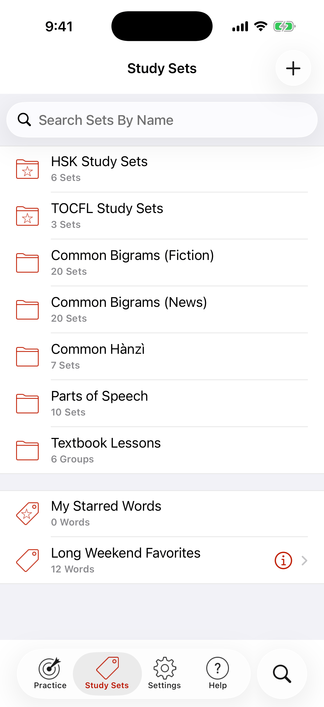

Choosing a Set
Tap on the Study Sets icon and choose a set. Sets are organized into folders and are also searchable.

To search, slide your finger down the screen to reveal a search bar. Tap in part of a set name, and the results will appear in realtime.
Creating Sets
Tap on the Study Sets icon and then tap the + icon in the upper right corner to add a new set.
To add new words to your new set, you can use Search, or you can also add cards to a set from another set using the Actions button.